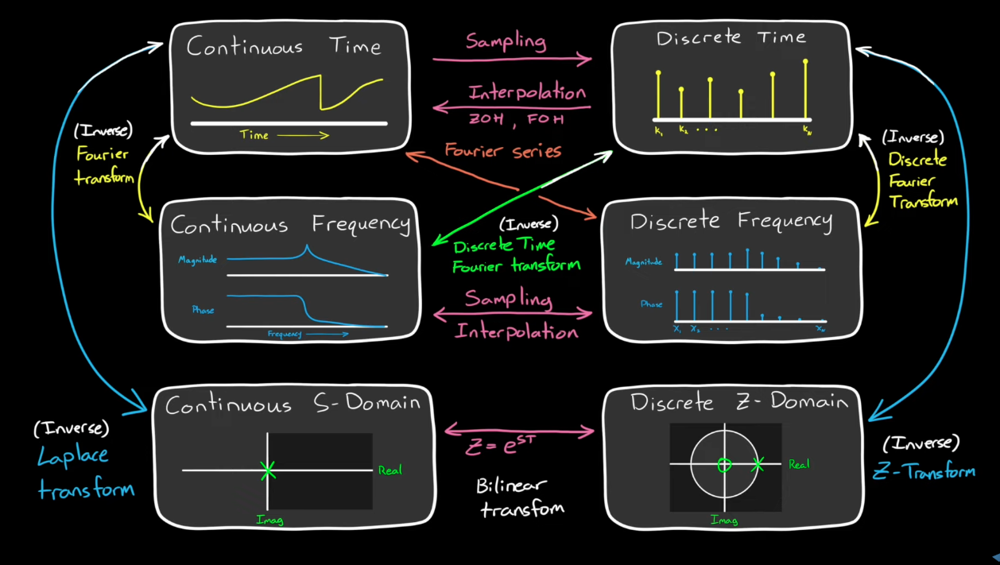

Autonomous vs. Non-Autonomous Systems
Autonomous system:
\(\dot{x} = f(x)\)
Dynamics depend only on the state \(x\).
Example:
\(\dot{x} = -2x\)
Exponential decay, no explicit time dependence.
Non-autonomous system:
\(\dot{x} = f(x, t)\)
Dynamics explicitly depend on time \(t\).
Example:
\(\dot{x} = -2x + \sin(t)\)
State evolution depends on both \(x\) and \(t\).
Augmenting
- To handle non-autonomous systems, augment the state with time:
\(\dot{x} = f(x, t), \quad \dot{t} = 1\)
New state vector:
\(z = \begin{bmatrix} x \\ t \end{bmatrix}, \quad \dot{z} = \begin{bmatrix} f(x, t) \\ 1 \end{bmatrix}\)
Why Augment?
- Converts a non-autonomous system into an autonomous system.
- Autonomous form is easier for:
- Stability analysis (Lyapunov, equilibrium points).
- Using standard control and simulation tools that assume autonomy.
Categorizing controllers
Classical (Transfer Function-Based) Controllers
- PID - most common in industry, time/frequency-domain based.
- Use when:
- Plant dynamics are reasonable well-behaved (not too nonlinear not too fast)
- No full state-space model (just input-output data)
- Need something simple, reliable, and easy to tune
- Use when:
- Lead-Lag Compensators – designed using Bode/Nyquist plots.
- Use when:
- You want to shape frequency response to improve stability margins or transient response
- You’re working in frequency domain (Bode Nyuquist)
- Use when:
- Notch filters -suppress certain frequencies.
State-Space Controllers
- LQR and LQI
- Use when:
- You have a full state-space model (A, B matices)
- Need optimal trade-off between control effort and performance
- The system is MIMO
- Use when:
- LQG - LQR + Kalman for output feedback
- Use when:
- Same as LQR but not all states are measurable
- Need optimal performance with noisy sensors
- Use when:
- Pole Placement - place closed-loop poles via state feedback
- Use when:
- You want specific transient dynamics (settling time, damping, overshoot).
- Model is known in state-space form
- Use when:
- MPC
- Use when:
- Need to handle constraints (actuator limits, safety boundaries)
- Computational resources are available
- Use when:
Adaptive & Nonlinear Controllers
- Model Reference Adaptive Control (MRAC) – adapts gains in real time.
- Use when: Plant dynamics change over time or are partially unknown
- Sliding Mode Control - robust to disturbances, discontinuous control law
- Use when: You need robustness against large uncertainties/disturbances
- Feedback Linearization – cancels nonlinearities with nonlinear control law.
- Use when: System is strongly nonlinear but exact model is known.
- Backstepping - recursive Lyapunov-based design
- Use when: dynamics are too complex or unkown for modeling
Data-Driven Modern AI controllers
- RL controllers -learn optimal policies from data
- Neural network controllers
Open Loop vs Closed Loop Control
Why feedback control?
- Uncertainty (inherent in the system) in open loop system dynamics. Preplanned control inputs may fall flat against uncertainties.
- Instability of the open loop system cann never be dealt with by open loop control. Feedback control allows us to directly change the dynamics of the system, inlcuding the eigenvalues of the system.
- Disturbances (external forces) can be rejected by feedback.
- Energy and efficiency.
Fixing Instability with Pole Placement
\(\dot{x}=Ax + Bu\), \(y=Cx\), let \(u=-Kx\), \(\dot{x}=Ax-BKx=(A-BK)x\)
We are able to change the actual dynamics of the system to stabilize it by selecting appropriate \(B*K\).
An Ideal Controller
- design for stability
- compensate for uncertainty
- reject diturbance
- attenduate noise
Why is Open Loop Transfer Functions Important
- Closed-loop stability depends on open-loop behavior
-
The closed-loop characteristic equation is: \(1+L(s)=0\) where \(L(s)\) is the open-loop transfer function.
-
All the closed-loop poles (which determine stability) come from this equation.
-
If \(L(s)\) has certain properties (like unstable poles or bad phase margins), the closed loop can become unstable.
-
- Open Loop Transfer Functions reveal robustness by Sensitivity and Complementary Sensitivity
- The closer the Open Loop Transfer Function L gets to -I, the bigger Sensitivity gets, and the less stable the system gets
Domains
